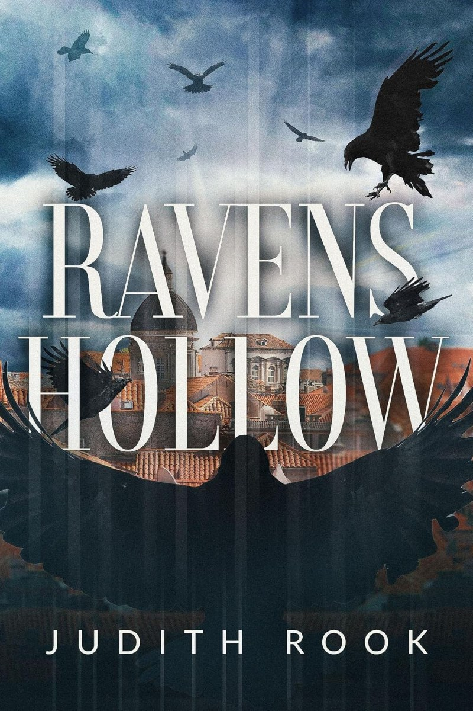

Her first novel
Ravens Hollow
Ravens are the sentinels that watch over the town of lost souls.
A story of facing confrontations from the past. It follows families haunted by the dead as they become trapped within their final resting place. With the dead watching and the living often providing no comfort, family secrets are forced to be revealed.
1851
The town
A small town rooted in the gold rush
Central Victoria. Lee Ping, a Chinese migrant and gold digger, is murdered and his soul is left to drift, trapped in the eternal terror of Ravens Hollow.
The painter
Painting first, then the words
In her bio, Judith says her main passion through her life has been painting. She exhibited in Victoria through the 1970s, then in Queensland through to the 2000s.
Her solo exhibition "Wisdom in a Wicker Basket" paired each painting with a poem, and that is what started her writing. Now living in Ballarat, she joined her U3A writing group and finished the story. She dedicated her first novel to her father, who was an avid reader and writer.
More from her
Whispers
For younger readers. A magical realism story with a boy called Sonny, wise owls and a crazy kookaburra.
Only she could have this
Sunday
22 November
She is an attending author at All Booked Out 2026, 10am to 3pm at Brown Hill Community Hall, Ballarat.
Ravens are the sentinels that watch over the town of lost souls.
Ravens Hollow on Amazon